소원명당 › 소원 종류 › 무사안녕
무사안녕·한 가지 소원으로 알려진 곳 42곳
특정한 소원보다 「올해도 무사하게」를 비는 사람이 가장 많아요. 이 쪽에는 정성껏 빌면 한 가지 소원은 들어준다는 이야기가 전하는 곳, 나라와 마을의 평안을 빌어 온 곳을 모았어요.
팔공산 갓바위, 창녕 관룡사 용선대, 진안 마이산 탑사, 옥천 용암사에는 「한 가지 소원」 이야기가 전해요. 대구 용수동 당산, 광주 칠석동 은행나무, 대전 장동 돌탑과 괴곡동 느티나무, 부안 수성당처럼 마을 사람들이 해마다 제사를 지내며 평안을 비는 민속문화유산도 함께 실었어요. 무속 영업장이 아니라 마을이 함께 지켜 온 곳이에요.
절과 바위, 오래된 나무는 누군가에게는 기도하는 자리예요. 조용히 다녀오고, 기도하거나 제사 지내는 사람을 촬영하지 마세요.
참고용 안내예요. 방문 전에 공식 안내를 확인하세요. 전해지는 이야기를 소개할 뿐, 결과를 약속하지 않아요. 입장 시간·요금·주차·통제(산불·공사·기상)는 바뀔 수 있어요. 확인일 2026.11.15.
-
팔공산 갓바위
경북 경산시 · 바위·석불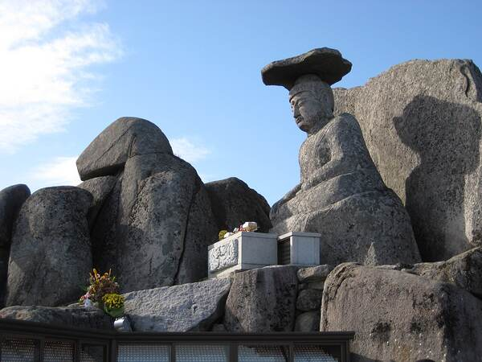
사진: Barnkim, Public domain, 크기 줄임 · 위키미디어 커먼즈 정성껏 빌면 한 가지 소원은 들어준다고 알려진 돌부처. 수능 철이면 학부모가 많이 찾아요.
- 사실
- 팔공산 남쪽 봉우리 관봉 꼭대기에 있는 돌부처예요. 정식 이름은 「경산 팔공산 관봉 석조여래좌상」이고, 1965년 보물로 지정됐어요. 머리 위에 넓적한 돌이 갓처럼 얹혀 있어 갓바위라고 불러요. 이 판석은 불상보다 나중에 올린 것으로 봐요. 관리는 아래쪽 선본사가 맡아요.
- 전해지는 이야기
- 지극정성으로 빌면 한 가지 소원은 이뤄 준다는 이야기가 전해요. 그래서 입시철과 새해에 기도하러 오는 사람이 많아요.
- 가는 길
- 경산 선본사 쪽 또는 대구 동구 관암사 쪽에서 돌계단으로 올라가요. 계단이 길고 가팔라요. 무릎이 불편하면 천천히 쉬어 가세요. 입시철·새해 아침에는 사람이 매우 많아요.
- 예절
- 불상 앞 기도 자리는 오래 차지하지 마세요. 기도하는 사람 바로 앞에서 사진을 찍지 마세요.
출처: 국가유산청 국가유산포털, 한국민족문화대백과사전, 대한민국 구석구석, 경북매일 · 확인 2026.11.15 · 자세히 보기
-
남해 보리암
경남 남해군 · 암자강화 보문사·양양 홍련암과 함께 3대 관음 기도처로 꼽히는 바다 위 절벽 암자.
- 사실
- 남해 금산 꼭대기 가까이, 바다를 내려다보는 자리에 있는 암자예요. 관세음보살 기도처로 이름이 높아요. 강화 보문사, 양양 낙산사 홍련암과 함께 우리나라 3대 관음 기도처로 불려요. 금산 일대는 남해군이 꼽는 남해 제1경이에요.
- 전해지는 이야기
- 조선을 세우기 전 이성계가 이 산에서 기도했다는 이야기가 전해요. 그 뒤 1660년 현종이 이곳을 왕실 원당으로 삼고 산 이름을 금산, 절 이름을 보리암으로 바꿨다고 해요.
- 가는 길
- 금산 아래에서 위쪽 주차장까지 오른 뒤 산길을 걸어가요. 새해 첫날 아침은 매우 붐벼요. 주차·셔틀 운영은 남해군 안내를 확인하세요.
- 예절
- 법당 안에서는 사진을 찍지 마세요. 해수관음상 앞 자리는 차례로 써요.
출처: 한국민족문화대백과사전, 한국민족문화대백과사전, 남해군 관광, 대한민국 구석구석 · 확인 2026.11.15 · 자세히 보기
-
낙산사 홍련암
강원 양양군 · 암자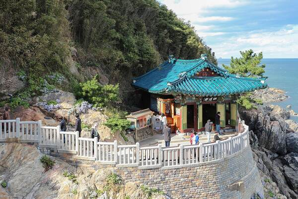
사진: Bernard Gagnon, CC0, 크기 줄임 · 위키미디어 커먼즈 의상대사가 붉은 연꽃 속 관음보살을 만났다는 바닷가 절벽 암자. 3대 관음 기도처 가운데 하나예요.
- 사실
- 낙산사 안 바닷가 절벽 위에 지은 작은 암자예요. 절벽의 굴 같은 지형 위에 있어 「관음굴」이라고도 불러요. 남해 보리암, 강화 보문사와 함께 3대 관음 기도처로 꼽혀요. 의상대와 홍련암 일대는 국가 명승이에요.
- 전해지는 이야기
- 의상대사가 이곳에서 기도하자 바다에서 붉은 연꽃이 솟고, 그 속에 관음보살이 나타났다는 이야기가 전해요. 「붉은 연꽃 암자」라는 이름이 여기서 왔어요.
- 가는 길
- 낙산사 경내로 들어가 의상대를 지나 바닷가 쪽으로 걸어가요. 새해 첫날 해돋이 때 매우 붐벼요. 관람 시간·입장료는 사찰 안내를 확인하세요.
- 예절
- 법당이 좁아요. 기도하는 사람이 있으면 차례를 기다리세요.
출처: 대한민국 구석구석, 한국민족문화대백과사전, 양양군 관광 · 확인 2026.11.15 · 자세히 보기
-
여수 향일암
전남 여수시 · 암자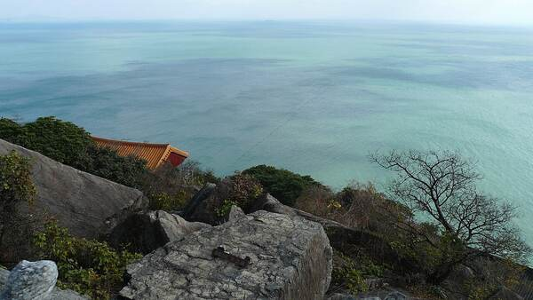
사진: 날개, CC BY-SA 3.0, 크기 줄임 · 위키미디어 커먼즈 「해를 향한 암자」. 바위틈 일곱 곳을 모두 지나면 소원 하나가 이뤄진다는 이야기가 전해요.
- 사실
- 여수 돌산도 남쪽 끝 금오산 바위 절벽에 있는 암자예요. 남해 수평선 위로 해가 뜨는 모습이 좋아 「향일(向日)」이라는 이름이 붙었어요. 2022년 일대가 국가 명승으로 지정됐어요. 여수시는 해마다 연말연시에 향일암 일출제를 열어요.
- 전해지는 이야기
- 원효대사가 처음 세우고 이곳에서 관세음보살을 만났다는 이야기가 전해요. 경내 바위틈 일곱 곳을 모두 지나가면 소원 한 가지가 이뤄진다는 이야기도 있어요.
- 가는 길
- 아랫마을 주차장에서 계단길 또는 완만한 길로 올라가요. 바위틈이 좁아요. 큰 가방은 두고 가세요. 연말연시 일출제 때는 교통 통제가 있을 수 있어요.
- 예절
- 바위틈에서는 서로 비켜 주세요. 해돋이 때 법당 앞을 막고 서 있지 마세요.
출처: 여수시 관광, 여수시 관광, 한국민족문화대백과사전, 대한민국 구석구석 · 확인 2026.11.15 · 자세히 보기
-
강화 보문사 눈썹바위
인천 강화군 · 사찰·마애불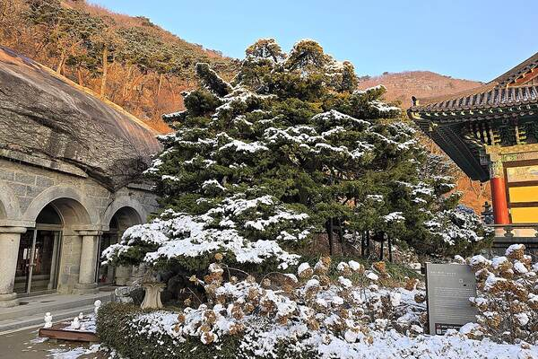
사진: Trainholic, CC BY-SA 4.0, 크기 줄임 · 위키미디어 커먼즈 눈썹바위 아래 마애관음 앞에서 빌면 한 가지 소원은 이뤄진다는 이야기가 전하는 석모도 절.
- 사실
- 석모도 낙가산에 있는 절이에요. 절 뒤 계단을 오르면 눈썹처럼 튀어나온 바위 아래에 바위에 새긴 관세음보살이 있어요. 이 마애석불좌상은 인천광역시 유형문화유산이에요. 남해 보리암, 양양 홍련암과 함께 3대 관음 기도처로 꼽혀요.
- 전해지는 이야기
- 정성껏 빌면 한 가지 소원은 꼭 이뤄진다는 이야기가 전해요. 아이를 바라는 사람이 이 앞에서 기도해 왔다는 이야기도 있어요. 수능을 앞두고 마애석불 앞에서 108배를 하며 기도하는 학부모 모습도 해마다 보도돼요.
- 가는 길
- 석모대교를 건너 섬 서쪽 보문사 주차장까지 가요. 눈썹바위는 절 뒤 계단으로 올라가요. 눈썹바위까지 계단 약 400개(대한민국 구석구석 안내 기준). 입장료·주차 요금은 사찰 안내를 확인하세요.
- 예절
- 마애관음 앞에서는 소리를 낮추고, 기도하는 사람 앞을 가로질러 다니지 마세요.
출처: 대한민국 구석구석, 한국민족문화대백과사전, 한국민족문화대백과사전, 한국경제 생글생글 · 확인 2026.11.15 · 자세히 보기
-
부산 해동용궁사
부산 기장군 · 사찰
사진: Anna L Martin, CC BY 2.0, 크기 줄임 · 위키미디어 커먼즈 「진심으로 빌면 한 가지 소원은 이룬다」는 입소문이 난 바닷가 절. 득남불도 유명해요.
- 사실
- 부산 기장 바닷가 바위 위에 지은 절이에요. 대부분의 절이 산에 있는 것과 달리 파도가 치는 해안에 있어요. 대한민국 구석구석 안내에는 입장료가 없다고 적혀 있어요. 108계단을 내려가면 바다 바로 앞에 법당이 있어요.
- 전해지는 이야기
- 진심으로 기도하면 한 가지 소원은 이룬다는 입소문이 있어요. 아들을 바라는 사람이 배를 만지고 가는 「득남불」 이야기도 전해요.
- 가는 길
- 주차장이나 버스 정류장에서 걸어가요. 절 입구에서 108계단을 내려가요. 입장료 없음(대한민국 구석구석 안내 기준). 계단이 많아 유모차·휠체어는 어려워요.
- 예절
- 법당 안 촬영은 하지 마세요. 시주함이 아닌 곳에 동전을 던지지 마세요.
-
밀양 만어사
경남 밀양시 · 사찰·바위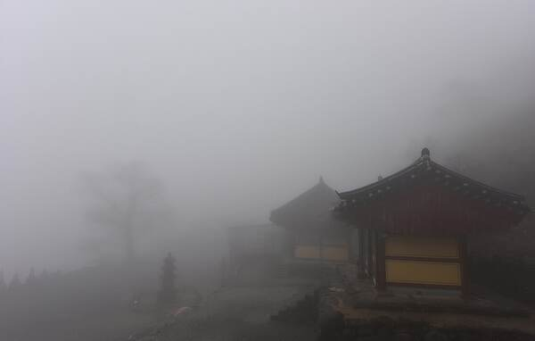
사진: 손묵광, CC BY-SA 4.0, 크기 줄임 · 위키미디어 커먼즈 두드리면 종소리가 나는 돌밭과 미륵바위가 있는 절. 들리지 않으면 소원이 이뤄진다는 소원돌도 있어요.
- 사실
- 밀양 만어산 꼭대기 가까이에 있는 절이에요. 절 아래로 큰 돌이 강물처럼 흘러내린 돌밭이 펼쳐져 있어요. 이 「밀양 만어산 암괴류」는 천연기념물이에요. 돌을 두드리면 쇠 종 같은 소리가 나서 종석·경석이라고도 불러요. 절 마당의 삼층석탑은 보물이에요.
- 전해지는 이야기
- 가락국 수로왕 때 동해의 물고기와 용들이 불법에 감동해 이 산으로 모여 돌이 됐다는 이야기가 전해요. 미륵전 안의 큰 바위는 용왕의 아들이 변한 것이라 하고, 이 바위에 빌면 아이를 얻는다는 이야기가 있어요.
- 가는 길
- 삼랑진읍에서 만어로를 따라 산길을 차로 올라가요. 산길이 좁고 구불구불해요. 돌밭은 틈이 많아 미끄러지기 쉬워요.
- 예절
- 삼층석탑은 두드리지 마세요. 돌밭의 돌을 가져가지 마세요.
출처: 한국민족문화대백과사전, 국가유산청 국가유산포털, 대한민국 구석구석, 경상남도 · 확인 2026.11.15 · 자세히 보기
-
화순 운주사 와불
전남 화순군 · 사찰·석불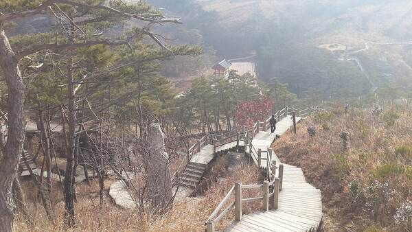
사진: Mar del Este, CC BY-SA 4.0, 크기 줄임 · 위키미디어 커먼즈 누운 부처가 일어나면 새 세상이 온다는 이야기가 전하는 천불천탑의 절.
- 사실
- 산 곳곳에 돌부처와 돌탑이 흩어져 있는 절이에요. 절터는 국가 사적이에요. 지금은 돌부처 70여 구와 석탑 18기가 남아 있어요. 산 위에는 바위에 새긴 커다란 부처 두 분이 누운 모습으로 있어 「와불」이라 불러요.
- 전해지는 이야기
- 도선국사가 하룻밤에 천 개의 불상과 천 개의 탑을 세우려 했는데, 마지막에 와불을 일으키려는 순간 닭이 울어 끝내 세우지 못했다는 이야기가 전해요. 와불이 일어나는 날 새 세상이 온다는 이야기도 있어요.
- 가는 길
- 주차장에서 골짜기를 따라 걷다가 서쪽 산등성이로 올라가면 와불이 있어요. 경내가 넓어요. 1~2시간을 잡으세요. 관람료는 사찰 안내를 확인하세요.
- 예절
- 불상과 탑에 올라가거나 돌을 얹지 마세요.
출처: 국가유산청 국가유산포털, 국가유산청 문화유산 이야기 마당, 한국민족문화대백과사전, 화순군 문화관광 · 확인 2026.11.15 · 자세히 보기
-
진안 마이산 탑사
전북 진안군 · 사찰·돌탑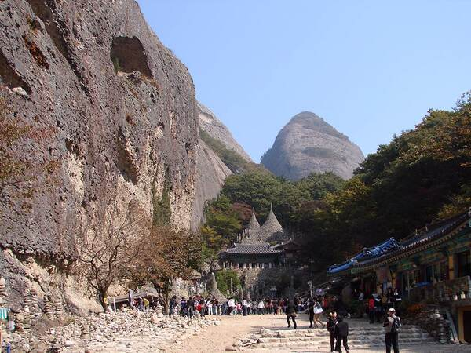
사진: Steve46814, CC BY-SA 3.0, 크기 줄임 · 위키미디어 커먼즈 한 사람이 평생 쌓았다는 돌탑 80여 기. 천지탑 앞에서 빌면 한 가지 소원이 이뤄진다는 이야기가 전해요.
- 사실
- 말 귀처럼 솟은 두 봉우리 마이산 아래 있는 절이에요. 절 둘레에 크고 작은 돌탑이 80여 기 서 있어요. 이 돌탑들은 1976년 전라북도 기념물 「마이산탑」으로 지정됐어요. 시멘트 같은 접착제 없이 돌만 쌓았는데도 오랜 세월 비바람을 견뎌 왔어요.
- 전해지는 이야기
- 이갑룡 처사가 이곳에 들어와 수십 년 동안 돌을 날라 탑을 쌓았다고 전해요. 가장 큰 두 탑인 천지탑 앞에서 기도하면 한 가지 소원은 이뤄진다는 이야기가 있어요.
- 가는 길
- 남부 주차장에서 탑영제 호수와 벚꽃길을 지나 걸어 올라가요. 봄 벚꽃철에는 매우 붐벼요. 입장료·주차 요금은 진안군 안내를 확인하세요.
- 예절
- 돌탑에 돌을 얹거나 빼지 마세요. 무너질 수 있어요.
출처: 한국민족문화대백과사전, 한국민족문화대백과사전, 전북 관광, 대한민국 구석구석 · 확인 2026.11.15 · 자세히 보기
-
영천 돌할매
경북 영천시 · 바위소원을 말하고 들었을 때 돌이 꿈쩍하지 않으면 이뤄진다는 이야기가 전하는 둥근 돌.
- 사실
- 영천 북안면 작은 마을에 있는 둥근 화강암이에요. 무게는 약 10kg, 지름은 25cm쯤이라고 소개돼요. 처음에는 아무 생각 없이 한 번 들어 보고, 다음에는 이름과 소원을 말한 뒤 다시 들어 봐요. 영문 관광 안내에는 연중 무료로 열려 있다고 적혀 있어요.
- 전해지는 이야기
- 소원을 말한 뒤 돌이 쉽게 들리면 이뤄지지 않고, 꿈쩍도 하지 않으면 이뤄진다는 이야기가 전해요.
- 가는 길
- 영천 북안면 돌할매로를 따라 마을 안으로 들어가요. 좌표는 마을 기준의 대략 위치예요. 길찾기는 주소로 확인하세요. 돌을 들 때 허리를 조심하세요.
- 예절
- 차례를 기다리고, 돌을 떨어뜨리지 않게 조심하세요.
출처: 대한민국 구석구석, 대한민국 구석구석, VISITKOREA (English) · 확인 2026.11.15 · 지도 위치는 대략
-
청도 운문사 사리암
경북 청도군 · 암자소원을 들어준다는 믿음이 깊은 나반존자를 모신 기도처. 비구니 도량 운문사에 딸린 암자예요.
- 사실
- 청도 운문사에 딸린 암자로, 고려 초 930년에 보량이 세웠다고 전해요. 운문사는 비구니 스님들이 수행하는 절이에요. 사리암은 나반존자 기도처로 널리 알려져 있어요. 운문사에서 산길과 계단을 한참 올라가야 해요.
- 전해지는 이야기
- 나반존자는 미륵불이 오기 전까지 중생을 돕겠다고 다짐한 성인으로 여겨져요. 조선 후기에 복을 주고 소원을 이뤄 주는 나반존자 신앙이 크게 퍼졌고, 사리암은 그 기도처로 이름이 났어요.
- 가는 길
- 운문사 주차장 쪽에서 사리암 주차장까지 간 뒤 산길과 계단을 올라가요. 계단 오르막이 길어요. 수행 도량이라 출입 시간이 정해져 있을 수 있어요.
- 예절
- 비구니 수행 도량이에요. 조용히 다니고 스님 사진을 찍지 마세요.
출처: 한국민족문화대백과사전, 한국민족문화대백과사전, 대한민국 구석구석 · 확인 2026.11.15
-
창녕 관룡사 용선대
경남 창녕군 · 석불절벽 위 연꽃 받침에 앉은 돌부처. 정성껏 빌면 한 가지 소원이 이뤄진다는 이야기가 전해요.
- 사실
- 관룡사 서쪽 봉우리 용선대 꼭대기에 동쪽을 바라보고 앉은 돌부처예요. 보물로 지정돼 있어요. 9세기 통일신라 때 만든 것으로 보며, 석굴암 본존불과 비슷한 양식이에요. 창녕군 안내에 따르면 절 뒤 오솔길을 따라 500m쯤 올라가면 닿아요.
- 전해지는 이야기
- 이 돌부처 앞에서 정성을 다해 빌면 한 가지 소원이 이뤄진다는 이야기가 전해 많은 사람이 찾아요.
- 가는 길
- 관룡사 주차장에서 절을 지나 뒤편 오솔길로 약 500m 올라가요(창녕군 안내). 바위 위라 바람이 세고 난간 밖은 위험해요.
- 예절
- 불상 대좌에 올라가지 마세요.
출처: 한국민족문화대백과사전, 국가유산청 국가유산포털, 창녕군 관광 · 확인 2026.11.15
-
진도 신비의 바닷길
전남 진도군 · 바다뽕할머니가 가족을 만나게 해 달라고 빌자 바다가 갈라졌다는 이야기가 전하는 바닷길.
- 사실
- 물이 가장 많이 빠질 때 회동리와 모도 사이에 길이 2.8km, 폭 10~40m의 바닷길이 드러나요. 2000년 국가 명승으로 지정됐어요. 1975년 주한 프랑스 대사가 「한국판 모세의 기적」으로 소개하며 널리 알려졌어요. 바닷길은 1년에 몇 차례, 한 번에 1시간 남짓만 열려요.
- 전해지는 이야기
- 호랑이를 피해 마을 사람들이 섬으로 건너갈 때 홀로 남은 뽕할머니가 용왕에게 가족을 만나게 해 달라고 날마다 빌었고, 바닷길이 열려 다시 만났다는 이야기가 전해요.
- 가는 길
- 진도 고군면 회동리 바닷길 입구에서 걸어 들어가요. 열리는 날짜와 시간을 진도군 안내로 꼭 확인하세요. 물이 들어오기 전에 반드시 돌아 나오세요. 좌표는 입구 체험관 기준이에요.
- 예절
- 갯벌 생물을 마구 잡아 가지 마세요.
출처: 한국민족문화대백과사전, 국가유산청 국가유산포털, 한국민족문화대백과사전 · 확인 2026.11.15 · 지도 위치는 대략
-
부안 내소사 당산나무
전북 부안군 · 나무·사찰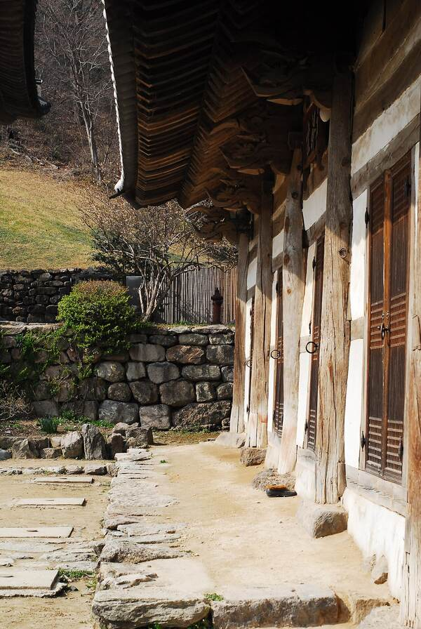
사진: Jo, CC BY 2.0, 크기 줄임 · 위키미디어 커먼즈 정월대보름이면 스님과 마을 사람이 함께 당산제를 지내는 절 안팎의 큰 나무.
- 사실
- 변산반도 능가산 아래 있는 절이에요. 일주문에서 전나무 숲길을 지나 들어가요. 경내 한가운데에 「할머니 당산나무」, 일주문 옆에 「할아버지 당산나무」가 있어요. 두 나무는 마을과 절을 함께 지켜 온 상징으로 소개돼요.
- 전해지는 이야기
- 해마다 정월대보름 무렵 스님과 주민이 모여 마을의 안녕을 비는 당산제를 지내요. 할머니 당산나무 아래에서 먼저 지내고 할아버지 당산나무 아래에서 마무리한다고 해요.
- 가는 길
- 내소사 주차장에서 일주문과 전나무 숲길을 지나 걸어 들어가요. 나무의 나이는 자료마다 달라 적지 않았어요.
- 예절
- 당산나무에 매단 금줄이나 천을 만지지 마세요.
출처: 대한민국 구석구석, 전북 관광, 한국민족문화대백과사전 · 확인 2026.11.15
-
논산 관촉사 은진미륵
충남 논산시 · 사찰·석불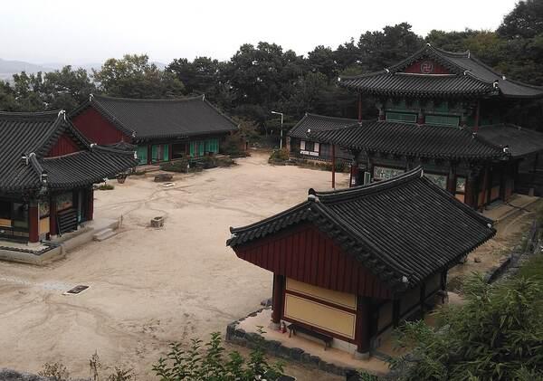
사진: G41rn8, CC BY-SA 4.0, 크기 줄임 · 위키미디어 커먼즈 나라가 평안하면 몸이 빛나고, 큰일이 생기면 땀을 흘린다는 이야기가 전하는 큰 돌부처.
- 사실
- 높이 약 18m에 이르는 고려 시대 돌부처예요. 흔히 「은진미륵」이라 불러요. 968년 무렵 만든 것으로 보며, 2018년 국보로 지정됐어요. 큰 얼굴과 높은 관이 특징이에요.
- 전해지는 이야기
- 나라가 태평하면 불상 몸이 빛나고, 나라에 어려움이 닥치면 온몸에서 땀이 흐른다는 이야기가 전해요. 바위가 땅에서 솟아나 그 돌로 불상을 만들었다는 창건 이야기도 있어요.
- 가는 길
- 논산 시내에서 관촉로를 따라 반야산 기슭으로 가요. 불상 앞마당까지 계단을 조금 올라가요.
- 예절
- 불상 앞 기도하는 사람을 가리지 않게 옆으로 비켜서 보세요.
출처: 한국민족문화대백과사전, 국가유산청 국가유산포털, 논산시 문화관광 · 확인 2026.11.15
-
양양 휴휴암
강원 양양군 · 암자·바위바닷가에 누운 관세음보살 모양 바위가 발견된 뒤 기도처로 알려진 암자.
- 사실
- 양양 현남면 바닷가에 있는 암자예요. 1997년 처음 세워졌어요. 바닷가 너럭바위는 「연화법당」이라 불러요. 그 위에 발가락바위, 발바닥바위 같은 작은 바위들이 있어요.
- 전해지는 이야기
- 1999년 바닷가에서 누운 관세음보살 모양의 바위가 발견된 뒤 기도하러 오는 사람이 늘었다고 해요.
- 가는 길
- 동해대로에서 광진리 바닷가 쪽으로 들어가요. 바닷가 바위는 파도가 높을 때 위험해요.
- 예절
- 바위 위에서는 뛰지 말고, 물고기에게 먹이를 함부로 주지 마세요.
-
태백산 천제단
강원 태백시 · 제단·산
사진: 윤호철, CC BY-SA 3.0, 크기 줄임 · 위키미디어 커먼즈 하늘에 제사를 지내던 산꼭대기 돌 제단. 예부터 해맞이 명소로 꼽혀 왔어요.
- 사실
- 태백산 꼭대기에 돌을 쌓아 만든 제단이에요. 1991년 국가민속문화유산으로 지정됐어요. 해마다 10월 3일 개천절에 하늘에 제사를 지내는데, 이를 천제라고 해요. 국가유산청 자료는 옛 기록에 태백산이 신년 해맞이 명소였다고 전해요.
- 전해지는 이야기
- 옛날부터 나라와 마을의 평안을 빌며 하늘에 제사를 올려 온 곳이라고 전해요.
- 가는 길
- 유일사나 당골 탐방로로 태백산 정상까지 걸어 올라가요. 겨울 산행 장비(아이젠, 방한복)가 필요해요. 새해 해돋이 산행은 국립공원 안내를 먼저 확인하세요.
- 예절
- 제단 안으로 함부로 들어가거나 돌을 옮기지 마세요.
출처: 국가유산청 국가유산포털, 한국민족문화대백과사전, 국가유산청 월간 국가유산사랑 · 확인 2026.11.15
-
양평 용문사 은행나무
경기 양평군 · 나무나라에 큰일이 생기면 소리를 냈다는 이야기가 전하는 천 년 넘은 은행나무.
- 사실
- 용문사 앞에 선 큰 은행나무예요. 1962년 천연기념물로 지정됐어요. 높이 약 42m, 줄기 둘레 약 14m이고, 나이는 1,100년쯤으로 추정해요. 조선 세종 때 정3품 이상의 벼슬인 당상직첩을 받았다고 전해요.
- 전해지는 이야기
- 의상대사가 꽂은 지팡이가 자랐다는 이야기, 마의태자가 금강산으로 가다 심었다는 이야기가 함께 전해요. 나라에 큰 변고가 있을 때 나무가 소리를 냈다는 이야기도 있어요.
- 가는 길
- 용문산 관광지 주차장에서 숲길을 따라 20~30분 걸어 올라가요. 가을 노란 잎이 들 때 매우 붐벼요.
- 예절
- 보호 울타리 안으로 들어가거나 가지를 꺾지 마세요.
출처: 한국민족문화대백과사전, 국가유산청 국가유산포털, 대한민국 구석구석 · 확인 2026.11.15
-
영종도 용궁사 소원바위
인천 중구 · 사찰·바위·나무돌을 돌려 소원을 점쳐 보는 소원바위와, 아이를 빌었다는 천 년 넘은 느티나무가 있는 절.
- 사실
- 영종도 백운산 자락에 있는 절이에요. 흥선대원군이 이곳에 머물며 기도하고 절을 다시 지었다고 전하며, 그가 쓴 현판이 남아 있어요. 절 입구에는 나이 약 1,300년으로 추정하는 느티나무 두 그루가 있고, 인천광역시 기념물이에요. 절 뒤 산길에 소원바위가 있어요.
- 전해지는 이야기
- 소원바위 위 작은 돌을 돌리며 소원을 비는데, 돌이 돌아가는 느낌으로 소원을 점친다고 해요. 해석은 사람마다 달라요. 두 느티나무는 할아버지·할머니 나무로 불리고, 아이를 바라는 사람이 빌었다는 이야기가 전해요.
- 가는 길
- 영종도 운남동 쪽 백운산 기슭 절 주차장에서 걸어 올라가요. 소원바위는 절 뒤 산길에 있어요.
- 예절
- 보호수인 느티나무 뿌리 위를 밟지 마세요.
출처: 인천광역시 굿모닝인천, 한국민족문화대백과사전, 한국민족문화대백과사전 · 확인 2026.11.15
-
서울 옥천암 보도각 백불
서울 서대문구 · 사찰·마애불흥선대원군 부인이 아들의 복을 빌며 하얗게 칠했다는 이야기가 전하는 흰 바위 부처.
- 사실
- 홍제천 가 큰 바위에 새긴 고려 시대 보살상이에요. 2014년 보물로 지정됐어요. 바위 앞에 보호각인 「보도각」이 있고, 현판 글씨는 흥선대원군의 것으로 전해요. 불상 전체가 하얗게 칠해져 「백불」이라고 불러요.
- 전해지는 이야기
- 고종의 어머니인 흥선대원군 부인이 아들의 복을 빌며 이곳에서 치성을 드리고 불상을 하얗게 칠했고, 그때부터 백불이라 불렀다는 이야기가 전해요. 태조 이성계가 한양에 도읍을 정하며 기도했다는 이야기도 있어요.
- 가는 길
- 홍제천 산책로를 따라 걸어가요. 상명대 쪽 버스 정류장에서 가까워요. 홍제천 산책과 함께 둘러보기 좋아요.
- 예절
- 보도각 안에서 기도하는 사람을 가리고 사진을 찍지 마세요.
출처: 한국민족문화대백과사전, 국가유산청 월간 국가유산사랑, 대한민국 구석구석 · 확인 2026.11.15
-
북한산 도선사
서울 강북구 · 사찰·마애불영험이 있다고 해서 기도하러 오는 사람이 끊이지 않는다는 북한산 마애불.
- 사실
- 북한산 기슭에 있는 절이에요. 절 기록에는 862년 도선국사가 세웠다고 전해요. 큰 바위에 새긴 마애불입상은 서울특별시 유형문화유산이에요. 만든 때는 조선 시대로 보는 견해와 더 이른 시기로 보는 견해가 함께 있어요.
- 전해지는 이야기
- 도선국사가 큰 바위를 지팡이로 갈라 관음보살상을 새겼다는 이야기가 전해요. 백과사전은 이 석불에 영험이 있다고 하여 기도하러 오는 사람이 끊이지 않는다고 적어요.
- 가는 길
- 우이동에서 도선사 길을 따라 차나 버스로 올라가요. 주말과 초하루에는 붐벼요.
- 예절
- 마애불 앞 기도 자리는 오래 차지하지 마세요.
출처: 한국민족문화대백과사전, 한국민족문화대백과사전, 대한민국 구석구석 · 확인 2026.11.15
-
옥천 용암사
충북 옥천군 · 사찰·마애불운해 위로 해가 뜨는 산사. 마애불에 빌면 이뤄지지 않는 일이 없다는 이야기가 전해요.
- 사실
- 장령산 중턱에 있는 절이에요. 552년 의신이 세웠다고 전하며, 경내에 용처럼 생긴 바위가 있어 용암사라는 이름이 붙었어요. 절 위쪽 바위에 높이 약 3m의 마애여래입상이 새겨져 있고, 충북 유형문화유산이에요. 맑고 일교차가 큰 날 새벽에는 산 아래로 구름바다가 깔려 해돋이 사진 명소로 알려져 있어요.
- 전해지는 이야기
- 이 마애불은 영험이 있어 기도하면 이뤄지지 않음이 없다는 이야기가 전해요. 신라 마지막 왕자 마의태자를 그리워한 사람들이 새겼다는 이야기도 있어 절에서는 「마의태자상」이라고도 불러요.
- 가는 길
- 옥천 읍내에서 삼청리 쪽 산길로 올라가 주차한 뒤 걸어서 올라가요. 해돋이를 보려면 해 뜨기 1시간 전에는 도착하세요. 새벽 산길은 어둡고 미끄러워요. 구름바다는 날씨에 따라 없는 날이 더 많아요.
- 예절
- 해돋이를 찍으러 온 사람이 많아도 법당 앞에서는 소리를 낮추세요. 삼각대로 길을 막지 마세요.
출처: 한국민족문화대백과사전, 한국민족문화대백과사전, 위키트리 · 확인 2026.11.15
-
비슬산 대견사
대구 달성군 · 사찰중국 황제의 세숫물에 비친 절터라는 이야기, 나라에 일이 있으면 돌부처가 땀을 흘렸다는 기록이 전하는 절.
- 사실
- 비슬산 정상 가까이, 해발 1,000m 안팎 바위 능선에 있는 절이에요. 신라 흥덕왕 때 세웠다고 전해요. 오래 폐허였다가 2014년 다시 지었어요. 고려 시대 삼층석탑이 절벽 끝에 서 있어요. 봄 참꽃(진달래) 군락으로 유명해요.
- 전해지는 이야기
- 당나라 문종이 세숫대야 물에 비친 아름다운 절터를 찾다가 신라에서 이곳을 찾아내 절을 세웠고, 「대국에서 보인 절」이라 대견사라 했다는 이야기가 전해요. 조선 태종·세종 때 이 절의 관음석상이 땀을 흘려 조정에 보고됐다는 기록도 있어요.
- 가는 길
- 비슬산자연휴양림 주차장에서 전기차(셔틀)나 임도를 따라 올라가요. 걸어서는 2시간 안팎이에요. 셔틀 운행 시간과 요금은 달성군 안내를 확인하세요. 정상부는 바람이 세고 겨울에 길이 얼어요.
- 예절
- 절벽 끝 석탑 주변 난간 밖으로 나가지 마세요.
출처: 한국민족문화대백과사전, 한국민족문화대백과사전, 달성군 · 확인 2026.11.15
-
대구 용수동 당산
대구 동구 · 당산·당나무돌담을 두른 당과 오래된 당나무 다섯 그루에 마을의 무사평안을 빌어 온 곳.
- 사실
- 팔공산 동화사 가는 길목, 용수동 마을 입구에 있는 마을 신당이에요. 자연석을 겹겹이 쌓은 높이 약 3.5m의 원뿔 모양 돌무더기(당)와 둘레의 큰 당나무 다섯 그루가 함께 신앙의 대상이에요. 1995년 대구 민속문화유산으로 지정됐어요. 마을이 생길 무렵인 약 300년 전에 만든 것으로 전해요.
- 전해지는 이야기
- 마을을 연 사람들이 입구에 나무를 심고 돌을 쌓아 제사를 지낸 것이 시작이라는 이야기가 전해요. 예전에는 정월 대보름 새벽에 마을의 무사평안과 집집의 풍요·무병을 비는 제사를 지냈고, 지금도 영험이 있다며 치성을 드리러 오는 사람이 있다고 해요.
- 가는 길
- 대구 동구 동화사 방면 도로에서 용수동 마을로 들어가요. 마을 안 길이 좁아 큰길가 공영주차장을 쓰세요.
- 예절
- 마을 제사 터예요. 금줄 안으로 들어가거나 당나무에 매단 것을 만지지 마세요.
출처: 한국민족문화대백과사전, 한국민족문화대백과사전 · 확인 2026.11.15 · 지도 위치는 대략
-
광주 칠석동 은행나무
광주 남구 · 나무·당산정월 대보름 당산제와 고싸움놀이의 중심이 되는 옻돌마을 당산 은행나무.
- 사실
- 칠석동 옻돌마을 앞에 서 있는 은행나무로, 1979년 광주 기념물로 지정됐어요. 해마다 정월 대보름 밤 마을 사람들이 이 나무 앞에서 당산제를 지내요. 이 마을은 국가무형유산 「광주 칠석 고싸움놀이」가 전승되는 곳이에요.
- 전해지는 이야기
- 마을 터가 누운 소 모양인데 소가 사나워서 고삐를 매어 두려고 은행나무를 심었다는 이야기가 전해요. 조선 초 문신 김문발이 심었다는 이야기도 있어요. 고싸움도 거센 소의 기운을 누르려고 시작했다는 속설이 있어요.
- 가는 길
- 광주 남구 칠석동 고싸움놀이 테마파크 근처, 마을 안에 있어요. 정월 대보름 전후에 고싸움놀이 행사가 열리는 해가 있어요. 일정은 남구 안내를 확인하세요.
- 예절
- 당산나무에 올라가거나 금줄을 건드리지 마세요. 주민이 사는 마을이니 조용히 다녀오세요.
출처: 한국민족문화대백과사전, 한국민족문화대백과사전 · 확인 2026.11.15 · 지도 위치는 대략
-
무등산 서석대·입석대
광주 동구·북구 · 산·바위고려·조선 때 나라 제사를 지냈고, 역병이 돌면 사람들이 무사안녕을 빌던 광주의 산.
- 사실
- 무등산은 높이 1,187m로 광주를 감싸는 산이에요. 정상 아래 서석대와 입석대는 돌기둥이 병풍처럼 늘어선 주상절리로 천연기념물이에요. 2013년 국립공원이 됐고, 2018년 유네스코 세계지질공원에 들었어요.
- 전해지는 이야기
- 신라·고려 때 무등산에는 나라 제사를 지내는 신사와 천제단이 있었고, 조선 태조가 「호국백」이라는 작위를 내렸다고 해요. 가뭄이 들면 고을 원님이 기우제를 올리고, 물난리나 역병이 돌면 광주 사람들이 신사에 가서 무사안녕을 빌었다는 기록이 전해요.
- 가는 길
- 증심사 또는 원효사 쪽 탐방로에서 장불재를 거쳐 입석대·서석대까지 올라가요. 왕복 4~5시간을 잡으세요. 정상(천왕봉)은 군부대 구역이라 평소에는 오를 수 없어요. 겨울에는 아이젠이 필요해요.
- 예절
- 주상절리 돌기둥에 올라가거나 돌을 쌓지 마세요. 정해진 탐방로로만 다니세요.
출처: 한국민족문화대백과사전, 한국민족문화대백과사전 · 확인 2026.11.15
-
대전 장동 산디마을 돌탑
대전 대덕구 · 돌탑·마을제할아버지탑·할머니탑 두 돌탑에 해마다 정월 열나흗날 밤 마을 평안을 비는 곳.
- 사실
- 계족산 아래 산촌 산디마을 입구 숲속에 돌탑 두 기가 있어요. 동쪽 할아버지탑은 약 2.3m, 서쪽 할머니탑은 약 1.8m예요. 이 탑에 지내는 마을 제사가 1998년 대전 무형유산으로 지정됐어요.
- 전해지는 이야기
- 해마다 음력 정월 14일 밤 마을 사람들이 두 탑에 제사를 지내며 한 해 마을의 평안과 풍년을 빈다고 해요. 탑을 처음 쌓은 때는 밝혀지지 않았어요.
- 가는 길
- 대덕구 장동에서 계족산 쪽 산디마을 길로 들어가요. 마을 입구 개울가 숲에 탑이 있어요. 계족산 황톳길과 가까워 함께 걷기 좋아요.
- 예절
- 탑의 돌을 빼거나 새로 얹지 마세요. 제사 때는 멀리서 지켜보세요.
출처: 한국민족문화대백과사전, 한국민족문화대백과사전 · 확인 2026.11.15 · 지도 위치는 대략
-
대전 괴곡동 느티나무
대전 서구 · 나무수령 약 700년, 해마다 칠월칠석에 마을 사람이 모두 모여 목신제를 올리는 수호목.
- 사실
- 높이 약 16m, 가슴높이 둘레 약 9.2m의 큰 느티나무예요. 수령은 약 700년으로 봐요. 2013년 천연기념물로 지정됐어요. 갑천이 굽어 흐르는 노루벌 근처 마을에 있어요.
- 전해지는 이야기
- 마을에서는 오래전부터 이 나무를 마을을 지키는 나무로 모셔 왔어요. 매년 칠월칠석이면 마을 사람이 모두 나무 앞에 모여 목신제를 올리며 마을의 안녕을 빈다고 해요.
- 가는 길
- 대전 서구 괴곡동 마을 안에 있어요. 마을 길이 좁으니 걸어서 들어가세요.
- 예절
- 천연기념물이에요. 뿌리 위 보호 구역에 들어가지 말고, 가지를 꺾지 마세요.
출처: 한국민족문화대백과사전, 뉴스서울 · 확인 2026.11.15 · 지도 위치는 대략
-
대전 법동 석장승
대전 대덕구 · 장승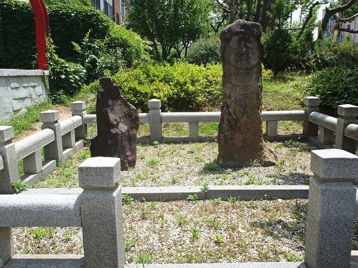
사진: Exj, CC BY-SA 4.0, 크기 줄임 · 위키미디어 커먼즈 천하대장군·지하여장군 돌장승에 마을의 액운을 막고 안녕과 건강을 빌어 온 곳.
- 사실
- 거친 자연석에 눈·코·입을 새긴 돌장승 한 쌍이에요. 높이는 153cm, 126cm예요. 북쪽 남장승에 「천하대장군」, 남쪽 여장승에 「지하여장군」이 새겨져 있어요. 1989년 대전 민속문화유산으로 지정됐어요. 택지 개발 때 잠시 옮겼다가 지금은 동춘당로 양쪽에 다시 세웠어요.
- 전해지는 이야기
- 음력 정월 열나흗날 밤 산신당에 제사를 지낸 뒤 장승에 거리제를 지내며, 마을의 액운을 막고 주민의 안녕과 건강을 빈다고 해요. 장승 몸에 왼새끼 금줄을 치고 둘레에 황토를 뿌린다고 해요.
- 가는 길
- 대전 대덕구 법동 동춘당로 길가에 있어요. 동춘당공원과 가까워요. 찻길 옆이라 사진을 찍을 때 차를 조심하세요.
- 예절
- 장승을 문지르거나 올라타지 마세요.
출처: 한국민족문화대백과사전, 한국민족문화대백과사전 · 확인 2026.11.15 · 지도 위치는 대략
-
부산 금정산 범어사
부산 금정구 · 사찰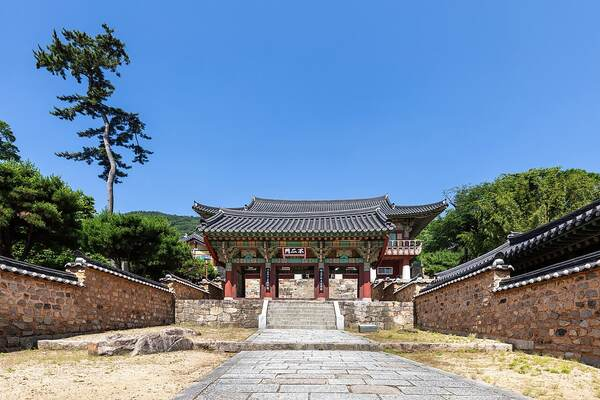
사진: Basile Morin, CC BY-SA 4.0, 크기 줄임 · 위키미디어 커먼즈 하늘에서 내려온 금빛 물고기 이야기와, 기도로 나라의 위기를 넘겼다는 창건 이야기가 전하는 절.
- 사실
- 금정산 동쪽 기슭의 큰 절로, 대한불교조계종 제14교구 본사예요. 의상이 세웠다고 전해요. 산마루 바위 위에 늘 물이 고여 있는 우물(금샘)이 있어 산 이름이 금정산이 됐다는 기록이 『신증동국여지승람』에 있어요.
- 전해지는 이야기
- 금빛 물고기가 오색 구름을 타고 하늘에서 내려와 금샘에서 놀았다 하여 산을 금정, 절을 범어사라 했다는 이야기가 전해요. 왜적이 쳐들어오려 할 때 왕의 꿈에 신인이 나타나 의상을 청해 기도하게 했고, 그 뒤 위기를 넘겼다는 창건 이야기도 있어요.
- 가는 길
- 부산 지하철 1호선 범어사역에서 마을버스를 타고 절 입구까지 가요. 금샘은 절에서 금정산 고당봉 쪽으로 1시간 넘게 올라가야 해요.
- 예절
- 대웅전 등 법당 안에서는 사진을 찍지 마세요. 금샘 바위에 동전을 던지지 마세요.
출처: 한국민족문화대백과사전, 서울신문 · 확인 2026.11.15
-
울산 대왕암공원
울산 동구 · 바다·바위죽어서도 용이 되어 나라를 지키겠다는 신라 왕비의 이야기가 전하는 바닷가 바위.
- 사실
- 울산 동구 바닷가에 기암괴석과 송림이 이어진 공원이에요. 공원 끝 바위섬 대왕암까지 다리가 놓여 있어요. 해맞이 전망 광장이 있어 새해 아침 해돋이를 보러 오는 사람이 많아요.
- 전해지는 이야기
- 신라 문무대왕의 왕비가 죽어서도 용이 되어 나라를 지키겠다며 이 바위섬 아래 잠겼다는 이야기가 전해요. 그래서 「용추암」이라고도 불러요. 경주 문무대왕릉 이야기와 비슷하지만, 여기서는 주인공이 왕비라는 점이 달라요.
- 가는 길
- 울산 동구 대왕암공원 주차장에서 송림길을 따라 걸어서 15분 안팎이에요. 바위 위는 바람이 세요. 파도가 높은 날은 다리를 막기도 해요.
- 예절
- 바위에 낙서하거나 돌을 쌓지 마세요. 낙서 사건 뒤 바위 표면을 긁어내야 했던 일이 있어요.
-
울산 처용암
울산 남구 · 바위섬동해 용왕의 아들 처용이 나타났다는 바위섬. 처용 그림을 문에 붙여 나쁜 기운을 막던 풍습의 뿌리.
- 사실
- 세죽마을 해변에서 약 150m 떨어진 울산만 안쪽의 작은 바위섬이에요. 1997년 울산 기념물로 지정됐어요. 『삼국유사』 처용랑 망해사 조에 이곳 개운포 이야기가 실려 있어요.
- 전해지는 이야기
- 신라 헌강왕이 개운포에 놀러 왔을 때 구름과 안개가 앞을 가렸는데, 용을 위한 절을 짓자 걷혔다는 이야기가 전해요. 이때 동해 용왕이 일곱 아들과 나타났고, 그중 처용이 왕을 따라 경주로 갔다고 해요. 처용이 역신을 물리친 뒤 사람들은 처용 얼굴을 문에 붙여 나쁜 기운을 막았다고 해요.
- 가는 길
- 울산 남구 황성동 세죽마을 해안에서 바다 쪽으로 바라볼 수 있어요. 섬에는 들어갈 수 없어요. 공단 사이 해안이라 길 찾기가 헷갈려요. 지도에서 「처용암 전망」으로 확인하세요.
- 예절
- 해안 산업 시설 구역에는 들어가지 마세요.
출처: 한국민족문화대백과사전, 한국민족문화대백과사전 · 확인 2026.11.15 · 지도 위치는 대략
-
강화 마니산 참성단
인천 강화군 · 제단·산
사진: Ssnm1015, CC BY-SA 4.0, 크기 줄임 · 위키미디어 커먼즈 단군이 하늘에 제사를 지냈다고 전하는 돌 제단. 고려·조선 때도 나라 제사를 올렸어요.
- 사실
- 마니산(472m) 꼭대기 가까이 돌을 쌓아 만든 제단으로, 1964년 사적으로 지정됐어요. 고려와 조선 때 나라에서 제사를 지낸 기록이 있어요. 지금도 해마다 10월 3일 개천절에 개천대제를 지내고, 전국체전 성화를 이곳에서 채화해요.
- 전해지는 이야기
- 단군이 제단을 쌓고 하늘에 제사를 지낸 곳이라는 이야기가 전해요. 그래서 새해 첫날 해맞이를 하며 한 해의 바람을 빌러 오르는 사람이 많아요. 제단 위에는 홀로 선 소사나무(천연기념물)가 있어요.
- 가는 길
- 마니산국민관광지 주차장에서 계단로(짧고 가파름) 또는 단군로(길고 완만함)로 올라가요. 편도 1시간 30분 안팎이에요. 입장료가 있어요. 제단 개방 여부는 강화군 안내를 확인하세요. 겨울에는 정상부 바위가 얼어요.
- 예절
- 제단 돌 틈에 동전이나 쪽지를 끼우지 마세요.
출처: 한국민족문화대백과사전, 한국민족문화대백과사전 · 확인 2026.11.15 · 자세히 보기
-
수원 팔달산 효원의 종
경기 수원시 · 종각세 번 치며 부모 은혜, 가족 건강, 내 소원을 차례로 비는 수원화성의 소원 종.
- 사실
- 수원화성 팔달산 서장대 근처 종각에 있는 종이에요. 정조의 효심을 기려 1991년 수원시가 만들었고, 높이 3.54m, 무게 12.5t이에요. 관람객이 돈을 내고 직접 칠 수 있어요.
- 전해지는 이야기
- 종을 세 번 치는데, 첫 번째는 부모님 은혜에 감사하고, 두 번째는 가족의 건강과 화목을, 세 번째는 자신의 발전과 소원 성취를 빈다고 안내해요. 새 종이라 전설보다는 수원화성의 효 이야기와 함께 즐기는 체험이에요.
- 가는 길
- 화성행궁 뒤편 팔달산 오르는 길로 서장대까지 걸어서 20분 안팎이에요. 타종 시간과 요금은 수원문화재단 안내를 확인하세요.
- 예절
- 정해진 횟수만 치고, 뒤에 기다리는 사람을 배려하세요.
-
안동 하회마을 삼신당
경북 안동시 · 나무·당아이를 점지해 준다는 삼신을 모신 600년 느티나무. 금줄에 소원지를 매다는 곳.
- 사실
- 하회마을 한가운데 있는 수령 약 600년의 느티나무로, 마을 사람들이 삼신당으로 모셔 왔어요. 하회마을은 고려 말부터 풍산류씨가 모여 산 마을로, 2010년 유네스코 세계유산에 등재됐어요.
- 전해지는 이야기
- 삼신당은 아기를 점지해 주는 신의 집이라는 이야기가 전해요. 그래서 아이를 바라는 사람과 집안의 평안을 비는 사람이 느티나무를 두른 금줄에 소원지를 매달아요. 풍산류씨 입향조가 심었다는 이야기도 있어요.
- 가는 길
- 하회마을 매표소에서 셔틀버스로 마을 입구까지 간 뒤 골목을 따라 마을 가운데로 걸어가요. 소원지는 마을 안내에 따라 정해진 곳에 매다세요.
- 예절
- 주민이 사는 집 대문 안으로 들어가지 마세요. 나무 뿌리 위를 밟지 마세요.
출처: 한국민족문화대백과사전, 매일신문 · 확인 2026.11.15
-
경주 문무대왕릉
경북 경주시 · 바다·바위
사진: vatar/편성재, CC BY-SA 3.0, 크기 줄임 · 위키미디어 커먼즈 죽어서 용이 되어 나라를 지키겠다던 문무왕의 바닷속 무덤으로 알려진 바위섬.
- 사실
- 봉길해변 앞바다 약 200m에 있는 바위섬으로, 신라 문무왕의 수중릉으로 알려져 사적으로 지정됐어요. 가까이에 감은사지와 이견대가 있어요. 새해 아침 바위섬 위로 뜨는 해를 보러 오는 사람이 많아요.
- 전해지는 이야기
- 문무왕이 죽은 뒤 동해의 호국룡이 되어 왜적을 막겠다며 바다에 장사 지내라고 유언했다는 이야기가 전해요. 아들 신문왕이 감은사를 짓고, 이견대에서 용이 된 아버지를 보았다고 해요. 그래서 나라와 집안의 무사안녕을 비는 곳으로 알려졌어요.
- 가는 길
- 경주 시내에서 감포 방면으로 가다 봉길해변 주차장에 세워요. 바위섬은 해변에서 바라봐요. 해변에 굿을 하는 사람이 있을 때가 있어요. 방해하지 말고 멀리서 보세요. 새해 아침에는 주차장이 일찍 차요.
- 예절
- 바위섬으로 배를 타고 들어가지 마세요. 사적이에요.
출처: 한국민족문화대백과사전, 한국민족문화대백과사전 · 확인 2026.11.15
-
김해 수로왕비릉·파사석탑
경남 김해시 · 능·석탑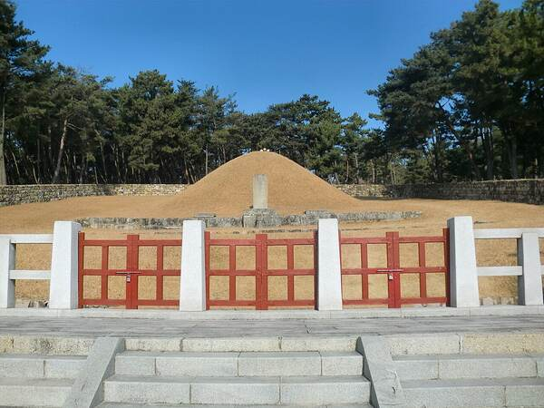
사진: hyolee2, CC BY-SA 3.0, 크기 줄임 · 위키미디어 커먼즈 먼 나라에서 배를 타고 와 가야 수로왕과 혼인했다는 허황옥의 무덤과, 그가 싣고 왔다는 돌탑.
- 사실
- 금관가야를 세운 수로왕의 왕비 허황옥의 무덤으로 전하는 곳이에요. 1963년 사적으로 지정됐어요. 능 앞 비각 옆에 파사석탑이 있는데, 우리나라 돌과 다른 붉은 기운의 돌로 만들어졌어요.
- 전해지는 이야기
- 허황옥은 아유타국의 공주로 서기 48년 배를 타고 가야에 와서 수로왕과 혼인했다는 이야기가 전해요. 왕자 열 명을 낳아 그중 둘에게 자기 성 「허」를 물려주었다고 해요. 파사석탑은 바다의 풍랑을 잠재우려고 배에 싣고 왔다는 탑으로 알려져 있어요.
- 가는 길
- 김해 경전철 수로왕릉역 또는 박물관역에서 걸어서 10분 안팎이에요. 국립김해박물관과 가까워요. 수로왕릉은 시내 반대쪽(약 1km)에 따로 있어요.
- 예절
- 파사석탑은 보호각 안에 있어요. 손을 넣거나 동전을 던지지 마세요.
출처: 한국민족문화대백과사전, 한국민족문화대백과사전 · 확인 2026.11.15
-
부안 수성당
전북 부안군 · 신당·바다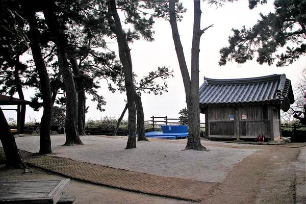
사진: Trainholic, CC BY-SA 4.0, 크기 줄임 · 위키미디어 커먼즈 서해 바다를 다스리며 어부를 지켰다는 개양할미와 여덟 딸을 모신 바닷가 신당.
- 사실
- 적벽강 절벽 위 언덕에 있는 단칸 기와집 신당이에요. 1864년 무렵 처음 지은 것으로 보며, 1974년 전북 유형문화유산으로 지정됐어요. 바로 옆 죽막동 유적에서는 삼국 시대부터 바다 제사를 지낸 흔적이 나왔어요.
- 전해지는 이야기
- 서해를 다스리던 여신(개양할미)이 딸 여덟을 각 도에 시집보내고 막내딸만 데리고 이곳 바다의 깊이를 재며 어부들의 목숨을 지켰다는 이야기가 전해요. 마을 사람들은 고마움을 담아 신당을 짓고 바다에서 무사하기를 빌었다고 해요.
- 가는 길
- 격포해수욕장에서 적벽강 방면으로 가다 수성당 안내판을 따라 언덕으로 올라가요. 봄에는 언덕에 유채꽃이 피어요. 해 질 녘 풍경이 좋아요.
- 예절
- 신당 문을 열거나 안의 물건을 만지지 마세요. 절벽 가장자리로 가지 마세요.
출처: 한국민족문화대백과사전, 한국민족문화대백과사전 · 확인 2026.11.15
-
계룡산 신원사 중악단
충남 공주시 · 제단·사찰조선 왕실이 계룡산 산신에게 나라의 평안을 빌던 제단. 지금은 하나만 남았어요.
- 사실
- 신원사 대웅전 뒤에 있는 산신 제단 건물로, 보물이에요. 조선은 묘향산·계룡산·지리산을 상·중·하악으로 삼아 제사를 지냈는데, 지금 남은 것은 계룡산 중악단뿐이에요. 1879년 명성황후가 다시 지었어요.
- 전해지는 이야기
- 계룡산은 신령스러운 산으로 여겨 1394년 태조 때부터 나라에서 산신에게 제사를 지냈다고 전해요. 한때 폐지됐다가 명성황후가 다시 세워 제사를 올리게 했다고 해요. 지금도 신원사에서 산신제를 이어 가요.
- 가는 길
- 공주 계룡면 신원사 주차장에서 걸어서 10분 안팎이에요. 신원사 입장료가 있을 수 있어요.
- 예절
- 중악단 안에서는 사진을 찍지 마세요. 기도하는 사람을 방해하지 마세요.
출처: 한국민족문화대백과사전, 한국민족문화대백과사전 · 확인 2026.11.15
-
제주 송당 본향당
제주 제주시 · 신당제주 마을 당신들의 뿌리로 전하는 송당 마을의 당. 아들 18명, 딸 28명을 낳았다는 여신을 모셔요.
- 사실
- 구좌읍 송당리 당오름 기슭에 있는 마을 신당이에요. 2005년 제주 민속문화유산으로 지정됐어요. 작은 당집 안에 마을 사람들이 바친 옷과 장신구가 놓여 있어요. 음력 1월 13일 대제를 비롯해 해마다 당굿이 이어져요.
- 전해지는 이야기
- 송당의 여신 금백주가 남신 소천국과 혼인해 아들 18명, 딸 28명을 낳았고, 그 자손이 제주 곳곳 마을의 당신이 되었다는 이야기가 전해요. 그래서 송당 본향당을 제주 본향당의 뿌리로 여겨요. 마을 사람들은 이곳에서 한 해 무사와 자손 번성을 빌어 왔어요.
- 가는 길
- 송당리 마을에서 당오름 쪽 안내판을 따라 걸어 들어가요. 마을 사람의 신앙 공간이에요. 의례가 있는 날은 출입을 삼가세요.
- 예절
- 당집 안의 물건을 만지거나 가져가지 마세요. 의례 중에는 촬영하지 마세요.
출처: 한국민족문화대백과사전, 비짓제주 · 확인 2026.11.15 · 지도 위치는 대략
-
단양 소백산 구인사
충북 단양군 · 사찰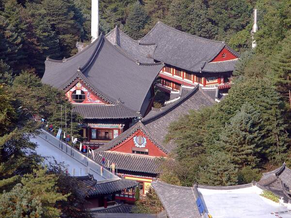
사진: Steve46814, CC BY-SA 3.0, 크기 줄임 · 위키미디어 커먼즈 국내 최대 규모의 관음 기도처로 알려진 소백산 골짜기의 천태종 총본산.
- 사실
- 1945년 상월조사가 세운 대한불교천태종 총본산이에요. 소백산 해발 약 600m 골짜기를 따라 5층 대법당을 비롯한 50여 동의 건물이 늘어서 있어요. 단일 사찰로는 신도가 가장 많은 곳으로 알려져 있어요.
- 전해지는 이야기
- 국내 최대 규모의 관음도량으로 알려져, 집안의 무사와 소원을 빌러 오는 신도가 사계절 끊이지 않아요. 절터는 금닭이 알을 품은 형국(금계포란형)의 명당이라는 이야기가 전해요.
- 가는 길
- 단양 읍내에서 영춘면 방면으로 40분 안팎, 절 아래 주차장에서 셔틀버스나 오르막길로 올라가요. 경내가 골짜기를 따라 길게 이어져 계단이 많아요.
- 예절
- 법당 안에서는 사진을 찍지 마세요. 기도 시간에는 소리를 낮추세요.
출처: 한국민족문화대백과사전, 한국민족문화대백과사전 · 확인 2026.11.15
-
정읍 칠보 남근석
전북 정읍시 · 바위마을 당산으로 모시며 아이와 아들을 비는 사람들이 밤에 기도를 올렸다는 돌.
- 사실
- 정읍 칠보면 원백암마을 논가에 서 있는 돌로, 전북 민속문화유산이에요. 마을에서는 당산으로 여겨 해마다 마을의 평안과 풍년을 비는 당산제를 지내 왔어요.
- 전해지는 이야기
- 아이를 낳지 못하거나 아들을 바라는 사람들이 밤에 백설기와 과일을 차려 놓고 이 돌에 기도를 올렸다는 이야기가 전해요. 마을의 당산이자 아이를 비는 신앙물로 신성하게 여겨 왔다고 해요.
- 가는 길
- 정읍 칠보면 소재지에서 백암리 원백암마을로 들어가요. 논 사이 작은 길이라 차는 마을 입구에 세우세요.
- 예절
- 돌을 만지거나 금줄을 건드리지 마세요. 논둑을 밟지 마세요.
출처: 한국민족문화대백과사전, 한국민족문화대백과사전 · 확인 2026.11.15 · 지도 위치는 대략
지역별로 보기
지도 첫 화면에서는 소원 종류와 지역을 함께 고를 수 있어요. 무사안녕 전체 지도로 보기